photography
Red Dead Redemption 2
2K
412
Feb. 2025
16:9
Outstanding story. Breathtaking graphics. Wow!!!!
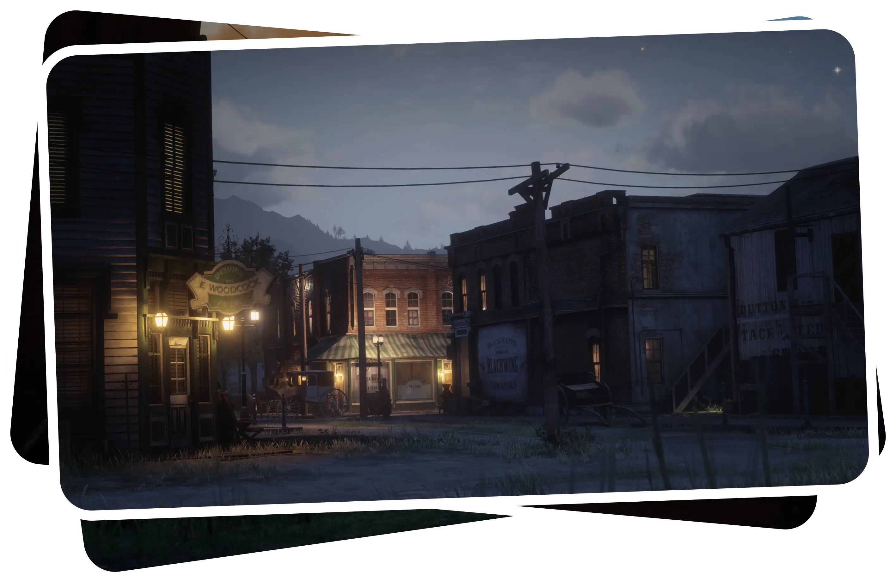
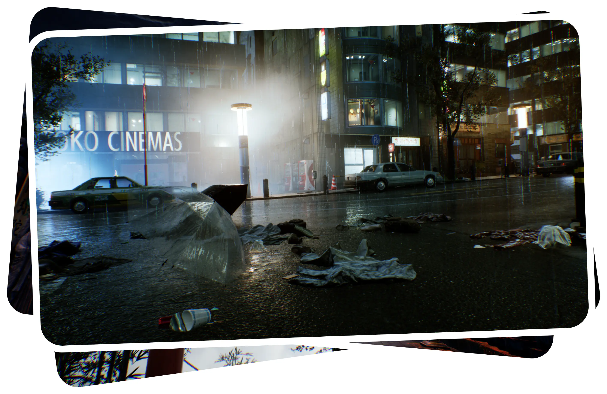
Ghostwire: Tokyo
2K
70
Dec. 2024
16:9
The first game from Tango Gameworks that I've played. The city of Tokyo is really detailed, and the quiet, vibrant streets are every bit as interesting to visit as many city sights that I've been to. Really enjoyed the story and gameplay, now I'm thinking of trying out The Evil Within.
S.T.A.L.K.E.R. 2
4K
109
Nov. 2024
16:9
The most buggy game I've played in 2024. It's undeniably beautiful though, and thanks to a particular mod I was able to take 4K screenshots and use noclip, which helped immeasurably.
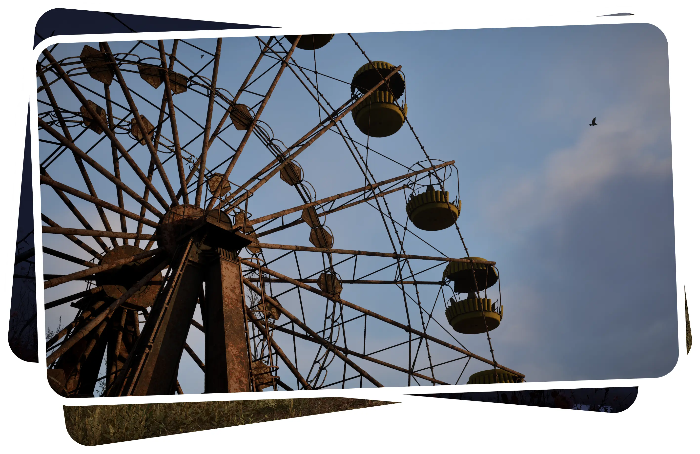
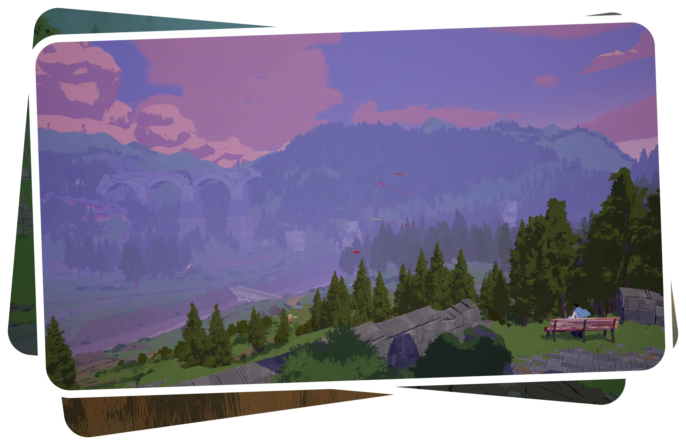
Season: A Letter to the Future
2K
10
Aug. 2024
21:9
The first game I played on my new 2K monitor. The game's short length is compensated for by its atmosphere and coziness. Unfortunately, there was no photomode in the game, so I wasn't able to dive deep into photography.
NIGHT-RUNNERS
4K
41
Jun. 2024
16:9, 9:16
This game exceeded my expectations in many ways. As a longtime Forza Horizon player, I can say it ranks second for best car handling and physics, surpassing The Crew 2, FM and the recent NFS titles. The graphics, customization options and especially the OST are also very good. I can't wait for the full release in December 2025!
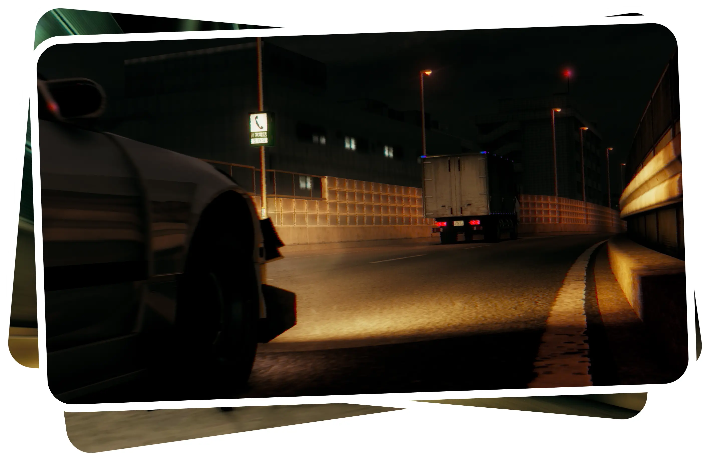
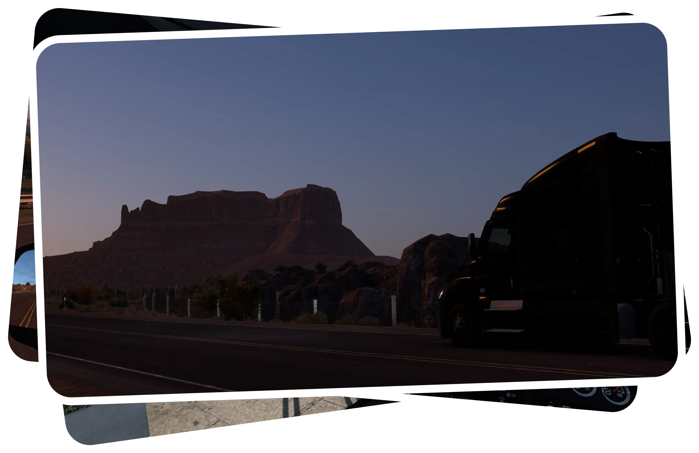
American Truck Simulator
FHD
16
2023-2024
16:9
Really good relaxing game. Spent a lot of time in it and took some landscape photos as well. Mid photomod that could have been better, but maybe they will make it nicer in future updates.
Forza Horizon 5
FHD
68
2022-2024
16:9, 9:16
I drive...
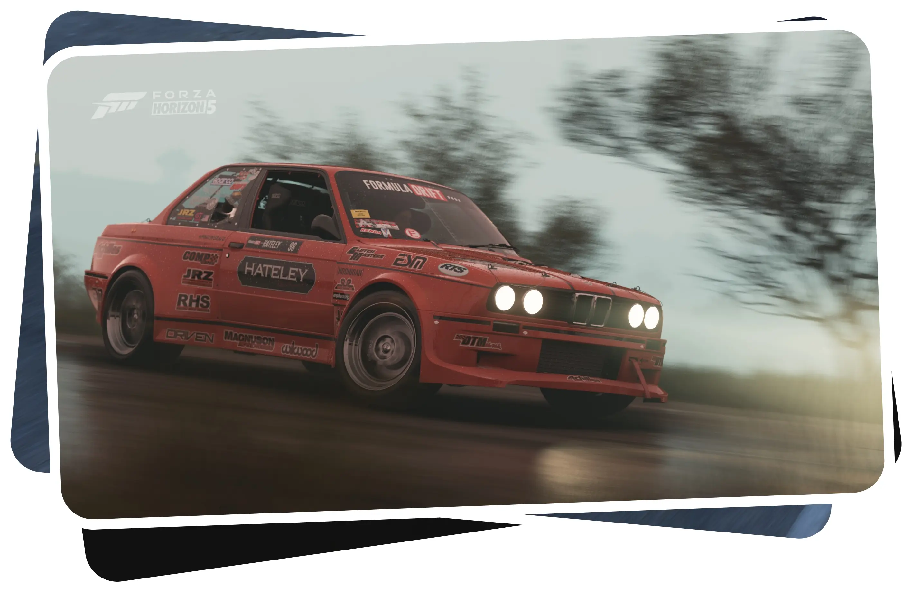
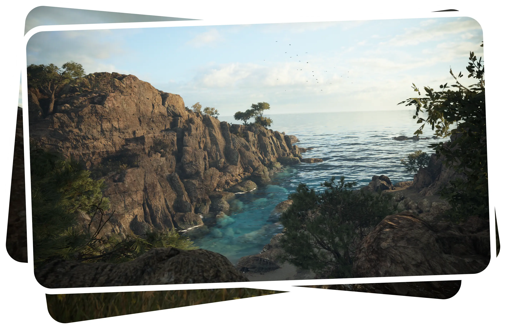
A Plague Tale: Requiem
FHD
6
Nov. 2023
16:9
The graphics in this game are incredible. Though, the photomode in it is not very good, but I still managed to take some beautiful shots.
Dishonored 2
4K
58
Jul. 2023
16:9
One of the best games of all time with an original art style and graphics that complement the gameplay. I don't know how much time Arkane spent on the game design, but it's mind-blowing how every shot on every level of the game turns out beautiful.
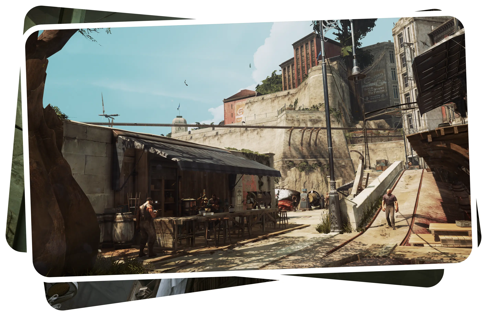
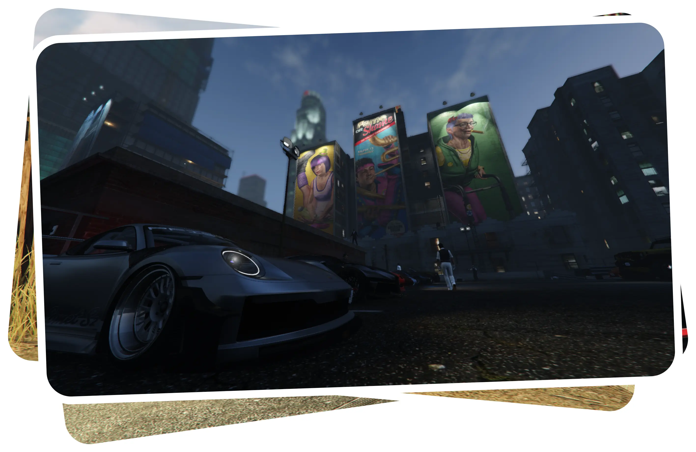
Grand Theft Auto 5
FHD
35
Dec. 2022
16:9
All of these images were taken at MMI car meets. While it's often difficult to find a good composition and lighting combination in a game that's over 10 years old, these meets allowed me to capture something interesting nonetheless. I was forced to use R* Editor to have a free cam, and it definitely has a lot of room for improvement. Hoping for that in GTA 6.
Forza Horizon 4
FHD
23
2020-2022
16:9, 9:16
This is my first game in the Forza Horizon series, and it might just be the best one yet. The graphics still seem great and the photomode is quite good.
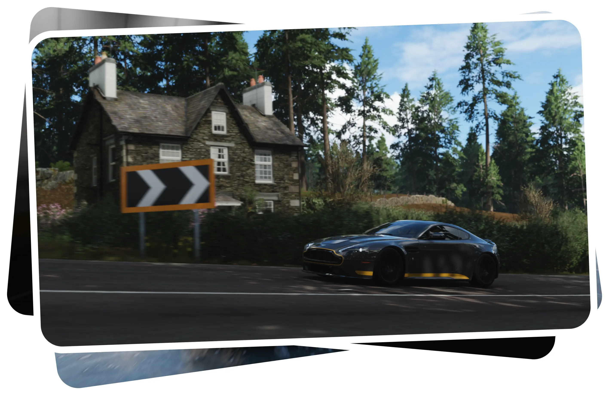